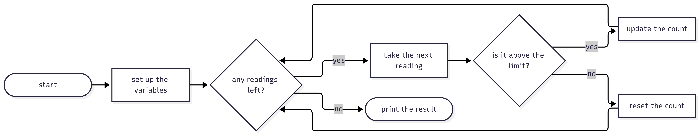
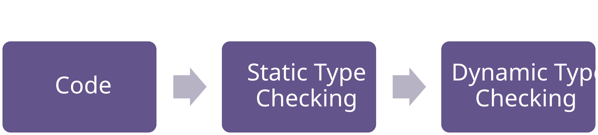
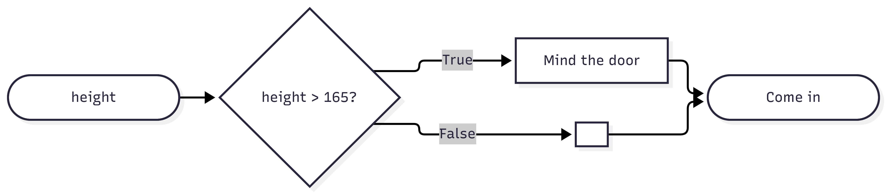

width = 20
height = 5 * 9
print(width * height)Biomedical Engineering Skills 2
Python 2 — The structure of a programming language
Massimo Vassalli
Python
Where we are
DEFINE
↓
DECOMPOSE
↓
➤ SPECIFY ⇄ DIAGNOSE
↓
VALIDATE
Last week: programming in the AI era. The machine writes the code; what stays with you is the thinking — breaking a problem down, saying precisely what you want, and checking what came back.
The engine of that is the SPECIFY ⇄ DIAGNOSE loop. Specifying is where you say what the program must do. Diagnosing is the engineering half: deciding what went wrong, and why, before touching anything.
Important
You cannot diagnose what you cannot read. So today: the machine writes, and we learn to read.
Why read code, if the AI writes it?
Because when it goes wrong — and it will — the thing you have to work out is what the code in front of you actually does, not what it was meant to do.
Because the fastest way to change working code is usually to change one line of it. Move a threshold from 100 to 90, widen a range, fix an endpoint: a surgical change is quicker, safer and far more precise than describing the whole program again to an assistant and hoping the rest comes back the same.
And because code that runs is the only place where some decisions are written down at all.
Tip
Rule for today: predict, then run. Say the answer out loud before you press ▶.
What a program looks like
A wearable has recorded a heart rate every few seconds. Count how many readings are above 100 bpm, and print the result.
That sentence, drawn as a diagram:

Note
Three shapes: things that happen in sequence, a decision that picks one path, and an arrow that goes back — a loop. Every program you will read this year is made of these.
The same structures, in any language
Whatever the language, execution follows three patterns: sequential (one instruction after another), branching (if) and loops (for, while). Everything else is built on top of them.
| Structure | Python | MATLAB | C / C++ | JavaScript / C# |
|---|---|---|---|---|
| Block | indentation | ... end |
{ ... } |
{ ... } |
| Selection | if hr > 100: |
if hr > 100 |
if (hr > 100) |
if (hr > 100) |
| Loop | for i in range(n): |
for i = 1:n |
for (int i = 0; i < n; i++) |
as C |
| First index | 0 | 1 | 0 | 0 |
| Function | def f(x): |
function y = f(x) |
double f(double x) {...} |
function f(x) {...} |
| Types | not declared | not declared | declared: int hr = 72; |
JS no / C# yes |
Logic: Python writes and, or, not; C, C++, C# and JavaScript write &&, ||, !; MATLAB writes &&, ||, ~.
Note
Two families: C, C++, C# and JavaScript look alike; Python and MATLAB are the outliers. Learn to read one of each and you can read them all.
Values and types
Variables are names bound to values
900Note
The name width does not contain 12: it is attached to a value. Assigning again points the same name at a different value, and every line written after that point sees the new one.
Every value has a type
<class 'int'>
<class 'float'>
<class 'str'>
<class 'bool'>In Python the type is decided at run time, by the value. In C, C++ or C# you declare it, and the compiler checks it before the program runs:
Note
Week 1: 7 / 2 gives 3.5 and 7 // 2 gives 3. In C, C++ and C#, 7 / 2 gives 3: two integers divide as integers. Same text, different answer.
Loud and silent failures
--------------------------------------------------------------------------- TypeError Traceback (most recent call last) Cell In[4], line 1 ----> 1 print("72" + 8) TypeError: can only concatenate str (not "int") to str
Warning
The first failure is loud: it stops the program and names the line. The second is silent: "7272" is not what anyone wanted, and nothing complains. With an assistant at your side, loud failures are nearly free — paste the error, get a fix. Silent ones are all that is left, and no error message will ever point at them. That is the work that stays yours.

Important
A language like C checks the types before the program runs, and refuses to build it. Python checks them as each line runs — so a mistake on a rarely-used branch waits there until the day that branch is taken.
Flexible, and quicker to write. Also riskier: nothing checks your types for you, so you have to be the diligent one.
Numbers are not exact
why types matter
Look at the following code; note that == asks a question: are these two values equal? The answer is True or False (we come back to this in a minute).
FalseNot a Python bug: computers store decimal numbers in binary, with a finite number of digits (IEEE 754). MATLAB, C, C++, C# and JavaScript all answer False too.
Important
Never compare two floats with ==. We will need a tolerance instead — later today.
Conditions are Boolean expressions
Branching depends on the state
A program becomes interesting when its behaviour depends on the state: the values currently held by its variables.
Branching runs a block of code only in some states. The key construct is if.

The if statement
ifchecks a condition and runs its block only when the condition is trueelif(else if) checks another condition, only if the previous ones were falseelsecatches everything that is left
Note
In Python the indentation says where the block starts and ends. MATLAB closes it with end, the C family with braces { }. Same structure, different punctuation.
A condition is a value
The condition is an expression that evaluates to True or False: a Boolean.
True
<class 'bool'>You can print a condition, store it, and give it a name. That is how you read one: evaluate it on its own, for a value you choose.
| Operator | Meaning |
|---|---|
== |
equal |
!= |
not equal |
> < |
greater, less |
>= <= |
greater or equal, less or equal |
Caution
= assigns, == compares. if hr = 100: is a syntax error in Python — and a valid, disastrous line in C.
Conditions that are not comparisons
A condition is anything that can be judged true or false. Three forms you will meet constantly in code you did not write:
False True
False True
False FalseSo if readings: means if there are any readings, and if not name: means if the name is empty.
A function can hand back a Boolean, and then the call is the condition: if "72".isdigit(): — nothing is compared, and nothing needs to be.
None means nothing was supplied. The idiom is if value is None:. One rule for now: use is only with None, and == for everything else.
Caution
if hr: and if hr != 0: look the same and are the same — until hr is 0, when the first one silently means missing. In a recording where 0 marks a dropped sample that is convenient. In one where 0 is a real value, it is a bug you will not see.
Combining conditions
and, or, not take Booleans and give a Boolean.
A |
B |
A and B |
A or B |
|---|---|---|---|
| True | True | True | True |
| True | False | False | True |
| False | True | False | True |
| False | False | False | False |
not A is simply the opposite of A.
Tip
To read a combined condition, evaluate each part for the value you care about, then combine.
Caution
not binds tighter than and, and and tighter than or: fever or hr > 100 and resting means fever or (hr > 100 and resting). As with 9 / 3 * 2 last week, the machine resolves the ambiguity silently. Write the brackets.
Ranges: inside, outside, and two broken versions
True
True
FalseThe outside condition is the negation of the inside one:
Note
The compact form is a Python speciality. In C, C++, JavaScript and MATLAB, 60 <= hr <= 100 is always true. In C# it does not compile.
The order of the branches
normalThe first branch that is true wins, and the rest are never tested. A patient at 120 bpm is reported as normal.
Important
Nothing crashed. Nothing warned. This is an implementation failure, and only reading — or a well-chosen example — will find it.
Repetition
Two kinds of loop
- Repeat until a condition is met — we do not know how many times:
while - Repeat over a sequence of values — once per element:
for
27 is too high
25 is too high
23 is too high
21 is too high
19 is too high
17 is too high
there we areCaution
The while condition is a Boolean expression, evaluated before every pass. If nothing inside the loop can make it false, the program never ends.
Looping over values
75.5readings is a list: a sequence of values, taken one at a time by the loop. Lists have much more to them — that is week 3.
Tip
total is not just a variable: it carries information from one pass to the next. Keep an eye on it.
Note
To repeat a fixed number of times, Python uses range: range(3) gives 0, 1, 2 and range(1, 10) stops before 10. In MATLAB, 1:10 includes 10 and the first element of an array is number 1, not 0. Off-by-one errors are the classic bug when code moves between languages.
Follow the code with an input
An alarm
Specification: raise the alarm when three consecutive readings are above 100 bpm.
Tip
Do not run it. Predict: what does it print?
The trace
hr |
hr > 100 |
count |
alarm |
|---|---|---|---|
| 96 | False | 0 | False |
| 104 | True | 1 | False |
| 108 | True | 2 | False |
| 99 | False | 0 | False |
| 101 | True | 1 | False |
| 103 | True | 2 | False |
| 100 | False | 0 | False |
| 106 | True | 1 | False |
FalseTwice the alarm came within one reading of firing. At 100 bpm the count went back to zero.
What the program remembers
countis the state: it carries the history of the readings into the next pass- the output does not depend only on the current reading, but on what came before
alarmis a Boolean state that latches: once true, nothing sets it back
Note
Reading code means tracking the state, not just the lines.
Three small changes, live. Predict each one before we run it:
if hr >= 100:— one characteralarm = (count == 3)instead of the secondif- delete the
else: count = 0
Calling a function you did not write
Most code you read is packaged into functions: a named procedure, inputs in, one result out.
50.0defdefines it; nothing happens until it is called- the names in brackets are its inputs, filled in by the call
returnhands the result back to whoever called it
Note
Today you only need to read and call functions. Writing your own, and what a function promises, is next week.
Reading a program, end to end
The program
Open code_A.py. It has been in use for years, nobody wrote down what it does, and the author has left.
def time_above_threshold(readings, interval_s):
above_s = 0
total_s = 0
for hr in readings:
if hr != 0 and hr <= 250:
total_s = total_s + interval_s
if hr > 100:
above_s = above_s + interval_s
return round(100 * above_s / total_s, 1)
readings = [78, 82, 0, 104, 110, 100, 96, 0, 300, 132]
print(time_above_threshold(readings, 15))Tip
Predict first, then we run it.
Working out what it does
Read in this order:
- the first line — the name, how many inputs, what they seem to be, what comes back
- the guards — conditions that filter or replace values before the real work
- the branches — which values are treated differently, and where the borders fall
- the state — what is carried from one pass of the loop to the next
- then trace a small input, and say in your own words what it computes
Here: above_s and total_s are the state, two running totals; hr is not — it is replaced on every pass and remembers nothing.
Caution
The name says time. The last line divides one total by the other and multiplies by 100: it returns a percentage. The name of a function is not its specification.
What does this code already protect against?
Read it as a sentence: a reading of exactly zero is a dropped sample, and anything above 250 bpm is an artefact; neither belongs in the recording.
Three layers, in every program you will ever read:
| Here | |
|---|---|
| managed, and sensibly | zeros and artefacts excluded, from the total as well as from the count |
| managed, but questionably | exactly 100 bpm is not “above” — a decision nobody wrote down |
| not managed at all | an empty recording (it divides by zero); a negative heart rate, which sails through the guard |
The ward disagrees
The guard throws the dropped samples away entirely: they count neither as time above, nor as recording time at all.
The ward sees it differently. The monitor was on the patient for the whole shift. A gap in the trace is still time in which the patient was not tachycardic — you cannot simply delete it.
Same recording, same code, one decision:
| how the zeros are treated | valid time | above | result |
|---|---|---|---|
| thrown away (what the code does) | 105 s | 45 s | 42.9 |
| counted as recording time | 135 s | 45 s | 33.3 |
Important
Nine percentage points, on a number that could go in a report. Nobody is wrong here — but nobody wrote it down either, so the code decided, and the code cannot tell you it was a decision.
Cases: what would you try it on?
Before anyone rewrites anything, decide what “the same answer” means. Work these out by hand, then run them.
| # | readings | prints |
|---|---|---|
| 1 | [78, 82, 104, 96] |
25.0 |
| 2 | [78, 82, 0, 104, 110, 100, 96, 0, 300, 132] |
42.9 |
| 4 | [96, 99, 100] |
0.0 |
| 6 | [0, 0, 104, 110] |
100.0 |
| 7 | [-5, 104, 110, 96] |
50.0 |
| 9 | [] |
stops with an error |
Note
The ordinary rows tell you almost nothing. Rows 4, 7 and 9 are the ones with information in them: the boundary, the input the guard misses, and the input nobody thought about.
Now have it rewritten
We describe the program to an assistant — in words, from our reading — and ask for a function that does the same job:
Write a Python function
percent_time_above(readings, interval_s)for a heart rate recording. Ignore readings of 0 (dropped samples) and readings above 250 bpm (artefacts). Return the percentage of the remaining recording time spent above 100 bpm, rounded to one decimal place. Exactly 100 bpm does not count as above. Plain Python, no packages.
Good prompt? It says the units, the boundary, the rounding and both guards.
Caution
It says nothing about a negative reading, and nothing about an empty recording.
Where they differ
| # | readings | original | rewritten | |
|---|---|---|---|---|
| 1, 2, 4, 6, 8 | ordinary and boundary cases | … | … | same |
| 7 | [-5, 104, 110, 96] |
50.0 | 66.7 | DIFFERENT |
| 9 | [] |
error | 0.0 | DIFFERENT |
Row 7: the original’s guard is hr != 0, so −5 counts as a valid reading. The rewrite drops anything below zero, leaving three readings instead of four.
Row 9: the original divides by zero. The rewrite returns 0.0 — a reasonable choice, made by a machine, on our behalf.
Important
Seven rows agree and two do not, and both of those are places where our description was silent. The assistant did not get it wrong. We did not say.
Writing it up
README_example_A.md — the whole exercise, in four short sections:
- What the program does — in your own words, from your reading
- The prompt — exactly as you sent it
- The check — the table of readings, with what each version prints, and a comment on every row that differs
- What you found — what your description left undecided, and what you would add next time
Note
This is also the shape of your assignment. And it is the last time you will write a description in loose prose: next week the same thing becomes a specification file, and the checks become code.
Tutorial
- The environment, properly this time: one project folder, one
.venv, the right interpreter — andcheck_env.pyuntil it passes - Predict, then run (AI off): short snippets and a Boolean drill
- On your own: read
tutorial_example.py, mark the loops, the branches and the state, and say what it protects against — the annotation you will do for the assignment - Then change one line of it, and find the inputs that can see the difference
- Start Assignment 2
The environment, again
Placeholder — to be expanded with the week 1 material and the troubleshooting sheet.
- one folder = one project; open the folder, never the file
- one
.venvinside it, created once, then chosen with Python: Select Interpreter - the terminal prompt shows
(.venv)when it is active python -m pip listtells you what that environment actually has- when something goes wrong, read the first line of the error and find it in the troubleshooting sheet on Moodle
Tip
Run check_env.py now. Do not move on until it prints All checks passed.
Markdown, in one slide
Your README.md is written in Markdown.
- a table row is just text between vertical bars; the second line (the dashes) is what makes it a table
- preview it in VS Code with
Ctrl+Shift+V, or side by side withCtrl+K V
Tip
Full syntax: markdownguide.org/basic-syntax and, for tables, markdownguide.org/extended-syntax.
Boolean drill
Evaluate by hand, for hr = 100, hr = 59 and hr = 0. No computer.
Tip
Then: rewrite the second one without not, and add brackets to the last one to show the order Python uses.
Predict, then run
Tip
Trace the table: hr, count, best. What does it print? What does best mean, in words? What happens if the last reading is 120?
Assignment 2
The same exercise, on a different program — and this time you only get a picture of it.
A one-page PDF, the same for everyone. You cannot run it, and you cannot paste it anywhere. The only way in is to read it. Everything in it differs from the one we did together: the boundary, the guard, the units.
- Annotate the listing by hand: the sequence, the loop, every condition and its two paths, the variables that carry state, the guards and what they protect against — and one sentence saying what the function returns, with its units
- Say what it does, in two or three sentences of your own
- Write a prompt that makes an assistant produce a function doing the same job
- Check it: your template has a table of readings with what the original prints; fill in what yours prints, and comment on the rows that differ
- Say what you found
Assignment 2 — what to submit
- the annotated PDF
README.md— from the template: your description, your prompt exactly as you sent it, the completed table, and what you found- the transcript, from the first prompt to the last
Submission is anonymous: put no name on any of the files.
Important
Rows that differ are not a failure. They are the interesting part: something your prompt did not say, that the assistant decided for you. A table filled in with no comments is worth very little.
Note
Marks: 40 for the annotation, 15 for the description, 20 for the prompt, 20 for the table and its comments, 5 for the transcript. Due before Monday’s lecture, on Moodle.
Take-home message
- Every language is built from the same few structures: values, names, branching, loops, functions
- A condition is a value you can evaluate on its own — that is the reading tool of the week
- Code carries state: the answer depends on what came before, not only on the current line
- Loud failures stop the program; silent ones reach your report
- To change code safely you must first know what it does, and then show that only the thing you meant to change has changed
- The cases that reveal a change are the ones you have to choose: touching the line you changed is not the same as showing what it does
- What you do not say in a prompt, the machine decides for you — next week, we write it down properly
Next week: functions as contracts — what your code promises, and how to test it.

ENG2012 Biomedical Engineering Skills 2